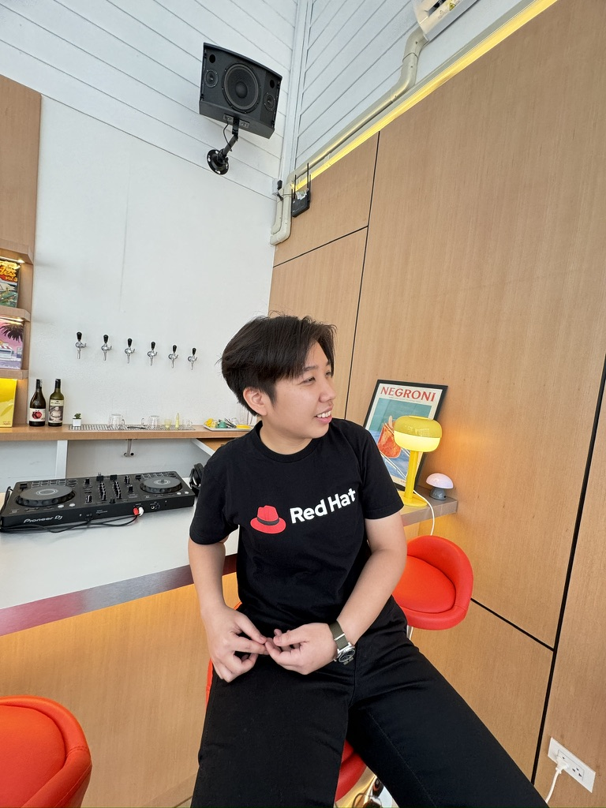
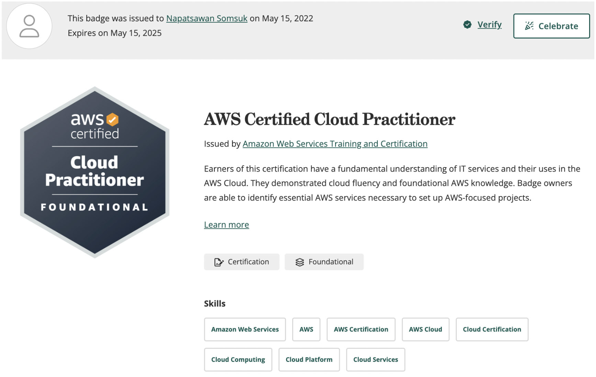
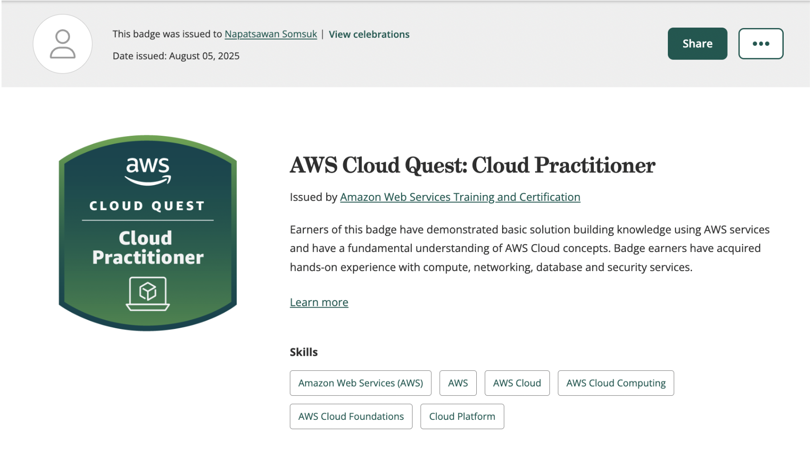
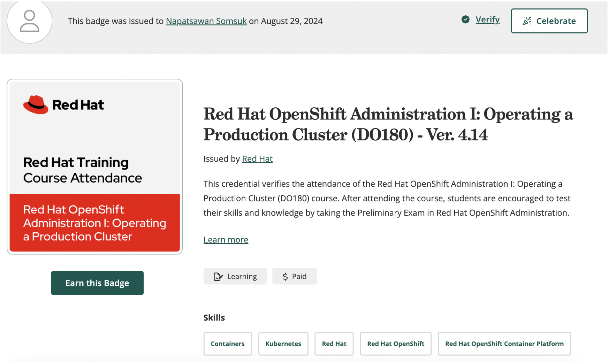
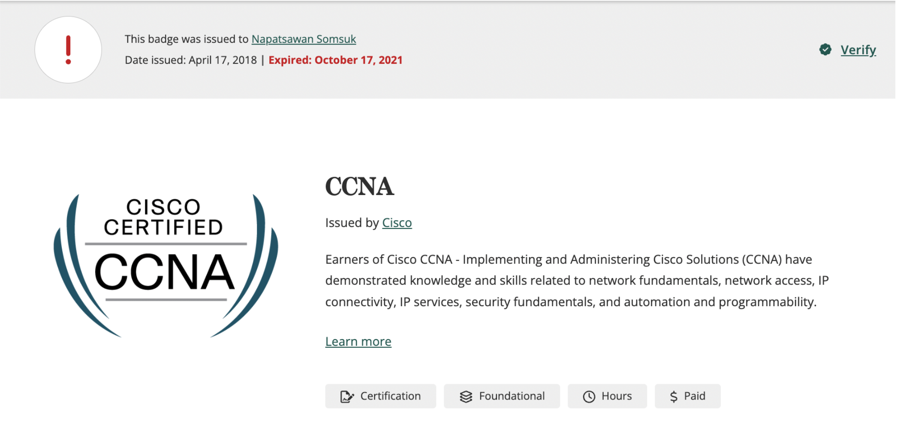

Napatsawan Somsuk

Summary
I am an aspiring Full-Stack Web Developer with a strong interest in building useful and easy-to-use websites and applications.
I have experience working with cloud systems, servers, and technical problem-solving from my previous jobs,
and now I want to grow my skills in web development. I enjoy learning new technologies, improving how systems work,
and creating solutions that help users. My goal is to become a full-stack developer who can work confidently on both the frontend and backend,
and build real projects that work well in production.
Education
- Bachelor of Information System and Network Engineering - Chiang Mai University (2014-2018)
Coursework
- Mobile Application Development
- Web Programming
- Wireless and Broadband Computer Networks Traffic Analysis
- Software Engineering
- Data Warehousing and Business Intelligence
- Project Management
Work Experience
System Analyst (Platform Architect) - Infogrammer Co., Ltd.
Apr 2025 - Present
- Design and maintain scalable, secure platform architecture across cloud and on-prem environments.
- Implement CI/CD pipelines in Azure DevOps for Docker-based applications on App Service, enabling faster and reliable deployments.
- Lead infrastructure planning, migration, and automation initiatives to optimize cost and performance.
- Define platform standards, security hardening, and monitoring to improve reliability.
- Collaborate with cross-functional teams to translate business needs into technical solutions.
- Support service migration from Azure App Service and Azure PostgreSQL Flexible Server to AWS ECS and Aurora DB, including testing, performance validation, and deployment readiness.
- Design software process flows, API specifications, and integration patterns for new system features.
- Prepare software proposals and functional/technical specifications for customers, ensuring clarity and alignment between business and technical requirements.
Presales (Solutions consultant) - AskMe Solutions & Consultants
Jan 2025 - Apr 2025
- Engaged directly with clients to gather requirements, identify pain points, and evaluate solution fit across sectors (cloud, AI, security, observability).
- Led solution design and proposals, coordinating with technical teams and external vendors to align with customer expectations.
- Created and presented Terms of Reference (TOR) and technical documentation tailored to each client’s operational needs.
- Supported software project pre-sales by mapping user journeys and designing workflows reflecting real business operations.
- Collaborated with project managers for handover and post-sales implementation, ensuring technical and functional alignment.
- Supported RFP/TOR analysis and effort estimation, ensuring timely and cost-effective solutions were proposed.
Plaform Engineer - Advanced Info Service (AIS)
Aug 2022 - Dec 2025
- Provide RFP and Implemented Red Hat OpenShift Container Platform on bare-metal ZTE servers, optimizing lifecycle management for both OpenShift and Azure Red Hat OpenShift.
- CD Automated application deployments to OpenShift using GitHub Actions, streamlining infrastructure setup processes.
- Collaborated with Red Hat TAM to ensure best operational practices and coordinated between vendors, platform operations teams, and application users.
- Designed and implemented hybrid cloud architecture using Azure Arc and Dell servers, improving user experience and operational standards.
- Reduced Azure licensing costs by optimizing usage and developed resource calculation templates for capacity planning.
- Achieved a 30% reduction in SQL Server implementation time by leveraging Azure Arc-enabled SQL Managed Instances.
System Engineer - Advanced Info Service (AIS)
- Supported VM creation and configuration across Linux, Windows, Ubuntu environments and NFV for F5 Load balancer and Fortigate Firewall, including golden images and firewall setups.
- Managed NAS permissions and F5 Load balancer configured firewalls based on AIS network security zones.
- Executed various VM modifications such as adding NICs, password resets, and extending NAS volumes.
- Automated VM tuning and hardening, reducing manual tasks by 30%.
- Provided executive-level capacity planning reports and managed server expansion for VMware, Huawei Full Stack Cloud and VM storage from ZTE and Huawei.
Cloud Core Network Engineer - Huawei Technologies
Mar 2018 - Aug 2022
- Developed and refactored 4G PS core systems to optimize network performance and handle growing traffic across mobile subscribers.
- Designed commercial logical network architecture, integrating multiple PS nodes to enhance system scalability and reliability.
- Managed 2nd Level Incident Management, resolving complex field issues that affected network performance and ensuring continuous service improvement.
Projects
AWS ECS Migration
- Led service migration from Azure to AWS ECS and Aurora DB.
- Optimized performance for a high-traffic food ordering platform with 100+ branches and peak ordering periods.
Azure App service Re-architechture and Migration
- Assessed existing Azure cloud infrastructure and identified performance bottlenecks, cost inefficiencies, and security gaps.
- Re-architected App Service environment with scalable tiers, improved network design, and optimized App Gateway, postgresql configuration.
- Established Azure governance policies (naming standards, RBAC, tagging, cost management, and security baseline).
- Migrated workloads to modernized architecture with Docker containers and CI/CD pipelines via Azure DevOps, reducing deployment errors and downtime.
- Improved platform stability, compliance, and cost efficiency while aligning with enterprise cloud strategy.
Azure Arc-Enabled SQL Managed Instance (Hybrid Cloud)
- Implemented Azure Arc-enabled SQL Managed Instances to support AIS’s applications.
- Optimized performance and resource utilization for internal services.
Red Hat OpenShift Platform (On-premise Bare-Metal, and On-cloud Azure)
- Prepare containerized orchestrator for applications using Red Hat OpenShift on both bare-metal and Azure.
- Improved scalability and deployment efficiency for AIS’s mobile and broadband services.
Private Cloud Infrastructure Expansion (VMware, Storage)
- Expanded VM storage for AIS's internal operations, ensuring high availability and resource optimization.
- Reduced downtime and improved efficiency.
4G Packet Switching & 5G NSA Node Expansion (MME, S-GW/P-GW)
- Expanded 4G packet switching and integrated 5G NSA nodes to boost network capacity.
- Optimized performance through end-to-end testing for seamless 4G and 5G connectivity.
NB-IoT (MME, S-GW/P-GW)
- Deployed Narrowband IoT (nb-IoT) technology to enhance low-power, wide-area IoT device communication.
- Integrated nb-IoT into existing infrastructure, improving device connectivity and coverage.
Online Charging Billing (P-GW, OCS)
- Implemented Gy interface for real-time billing through integration with the Online Charging System (OCS).
- Ensured accurate, real-time data usage billing by automating and testing the system.
Skills
Cloud Platforms
Container Orchestration
- OpenShift Container Platform
- Kubernetes
- Docker
Networking
- NFV
- Firewall
- Load balancer
DevOps
Project and Troubleshooting Management
- Coordination with vendors
- Developer teams
- Platform teams
Awards and Certifications




Other